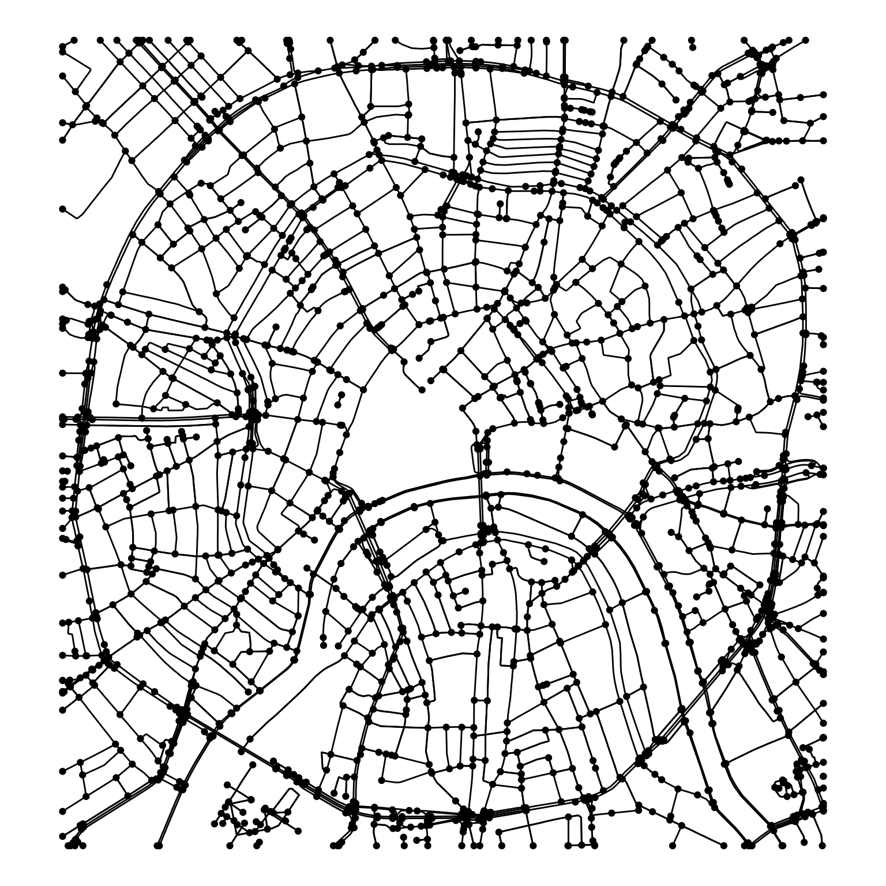
Основы геоинформатики: лекция 7
7 марта 2025 г.
Сетевые формы структурной организации явлений играют большую роль в географическое среде
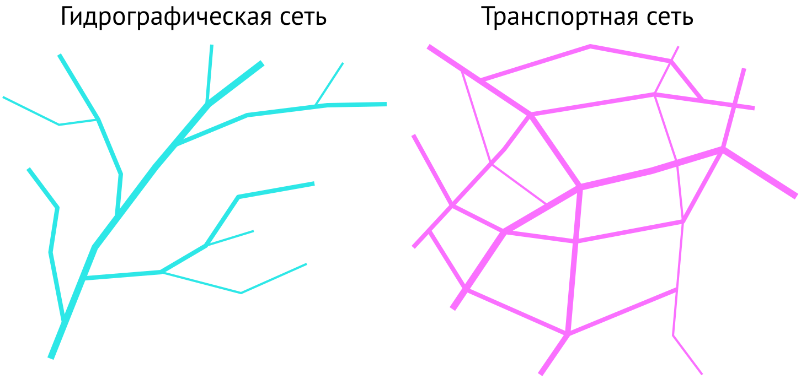
Для моделирования таких структур используется теория графов.
Простой граф \(G(V,E)\) — совокупность множества вершин \(V = \{v_1, v_2, ...\}\) и множества ребер \(E\) (Newman 2018).
\(E\) состоит из упорядоченных пар элементов множества вершин:
\[ e_{ij} = \{v_i, v_j \},~ i \neq j \]
\(V\) не пусто;
\(E\) может быть пустым;
не все комбинации \(\{v_i, v_j \}\) могут входить в \(E\).
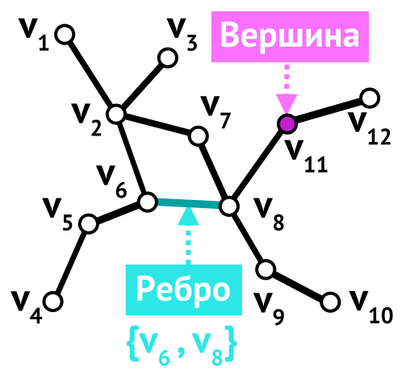
Представление ребер в виде матрицы \(A = \{a_{ij}\}\), где \(a_{ij} = 1\), если существует ребро \(e_{ij}\), и \(a_{ij} = 0\), если такого ребра нет.
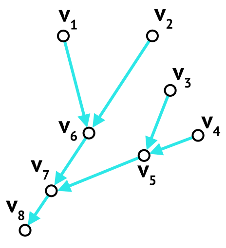
\[ \begin{bmatrix} 0 & 0 & 0 & 0 & 0 & \color{blue}{\mathbf 1} & 0 & 0 \\ 0 & 0 & 0 & 0 & 0 & \color{blue}{\mathbf 1} & 0 & 0 \\ 0 & 0 & 0 & 0 & \color{blue}{\mathbf 1} & 0 & 0 & 0 \\ 0 & 0 & 0 & 0 & \color{blue}{\mathbf 1} & 0 & 0 & 0 \\ 0 & 0 & 0 & 0 & 0 & 0 & \color{blue}{\mathbf 1} & 0 \\ 0 & 0 & 0 & 0 & 0 & 0 & \color{blue}{\mathbf 1} & 0 \\ 0 & 0 & 0 & 0 & 0 & 0 & 0 & \color{blue}{\mathbf 1} \\ 0 & 0 & 0 & 0 & 0 & 0 & 0 & 0 \\ \end{bmatrix} \]
Представление ребер в виде матрицы \(A = \{a_{ij}\}\), где \(a_{ij} = 1\), если существует ребро \(e_{ij}\), и \(a_{ij} = 0\), если такого ребра нет.
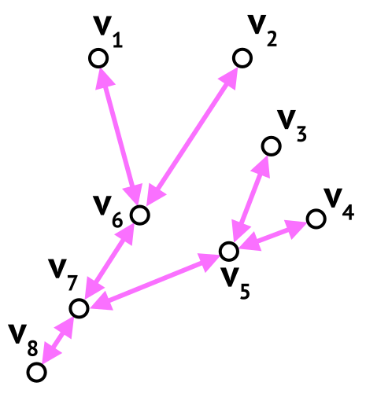
\[ \begin{bmatrix} 0 & 0 & 0 & 0 & 0 & \color{red}{\mathbf 1} & 0 & 0 \\ 0 & 0 & 0 & 0 & 0 & \color{red}{\mathbf 1} & 0 & 0 \\ 0 & 0 & 0 & 0 & \color{red}{\mathbf 1} & 0 & 0 & 0 \\ 0 & 0 & 0 & 0 & \color{red}{\mathbf 1} & 0 & 0 & 0 \\ 0 & 0 & \color{red}{\mathbf 1} & \color{red}{\mathbf 1} & 0 & 0 & \color{red}{\mathbf 1} & 0 \\ \color{red}{\mathbf 1} & \color{red}{\mathbf 1} & 0 & 0 & 0 & 0 & \color{red}{\mathbf 1} & 0 \\ 0 & 0 & 0 & 0 & \color{red}{\mathbf 1} & \color{red}{\mathbf 1} & 0 & \color{red}{\mathbf 1} \\ 0 & 0 & 0 & 0 & 0 & 0 & \color{red}{\mathbf 1} & 0 \\ \end{bmatrix} \]
Топологически эквивалентными являются графы, у которых совпадают матрицы смежности (Barthelemy 2022).
Географические сети
Географические сети отличаются тем, что для них важную роль играет не только топологическая эквивалентность, но также местоположение (координаты) вершин.
Топологически эквивалентными являются графы, у которых совпадают матрицы смежности (Barthelemy 2022).
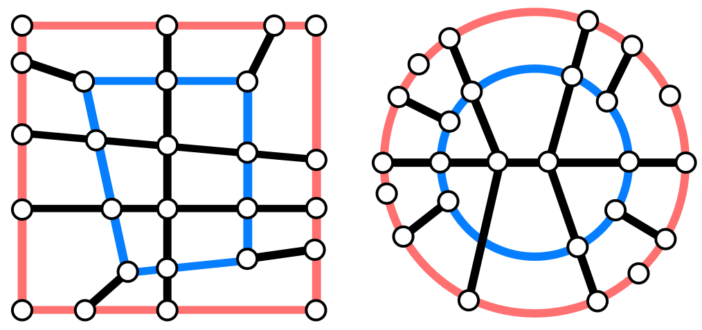
Географические сети
Географические сети отличаются тем, что для них важную роль играет не только топологическая эквивалентность, но также местоположение (координаты) вершин.
Основные направления сетевого анализа:
Необходимо на основе векторных данных создать графовую (сетевую) модель, состоящую из вершин и ребер
Важно
Для того чтобы граф построился корректно, линии должны быть аккуратно пристыкованы друг к другу в местах сочленений. В противном случае в местах их стыковки не будут созданы вершины графа.

Выполняется поиск последовательности ребер графа, которая дает минимальную стоимость передвижения между точками.
Особенности
стоимость одного ребра графа обычно выражается в времени передвижения по нему, либо его длине;
стоимость может быть масштабирована на коэффициент значимости ребра;
дополнительные задержки могут быть заложены в вершинах графа;
может учитываться трафик движения.
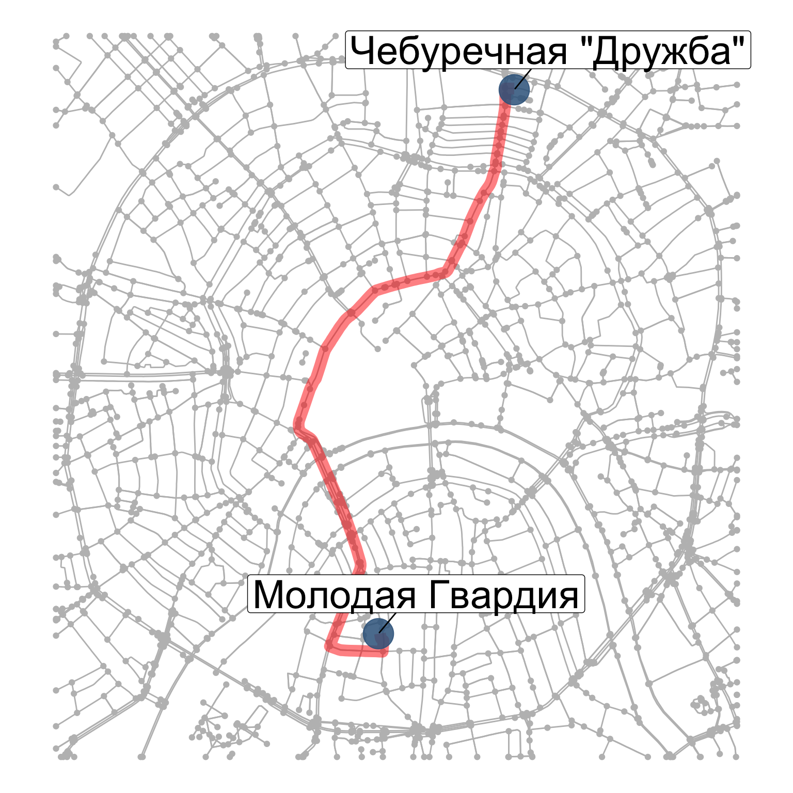
Задача коммивояжера — определение оптимального маршрута объезда заданного множества точек
Использование
Одна из самых распространенных задач в логистике. Решается в целях оптимизации объезда клиентов, складов и т.д. Вычислительно является сложной задачей.
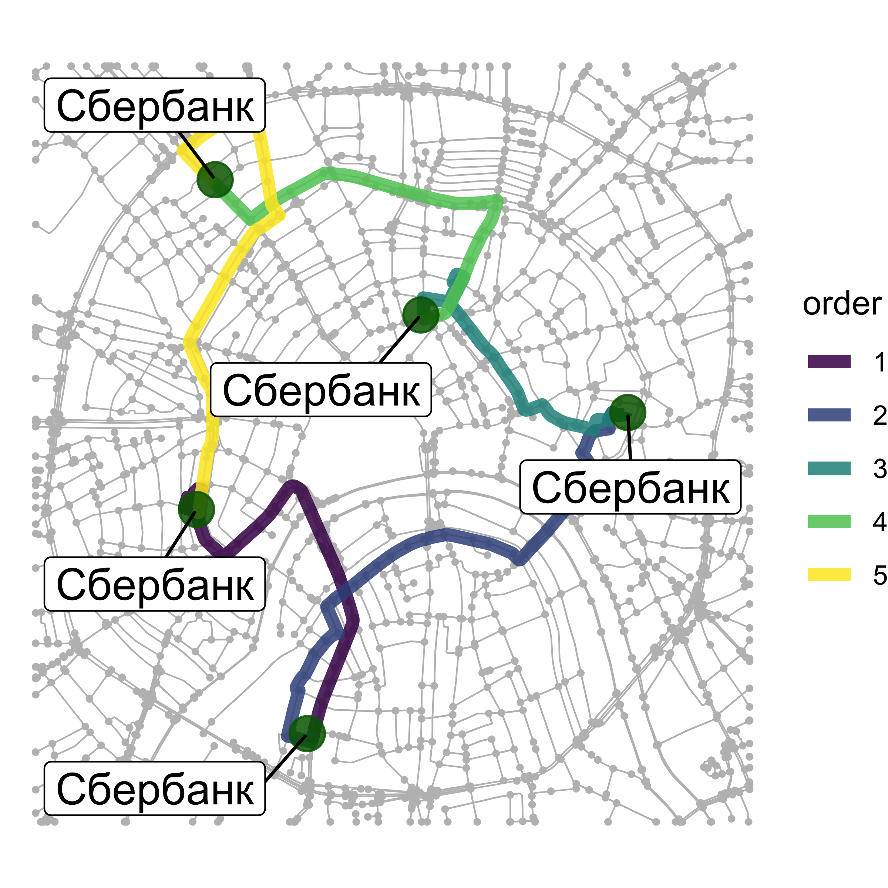
Задача данного класса позволяет находить для каждой точки клиента ближайший к ней пункт обслуживания
Пример
Для каждого заведения общепита найти ближайшее по времени отделение Сбербанка для пешехода
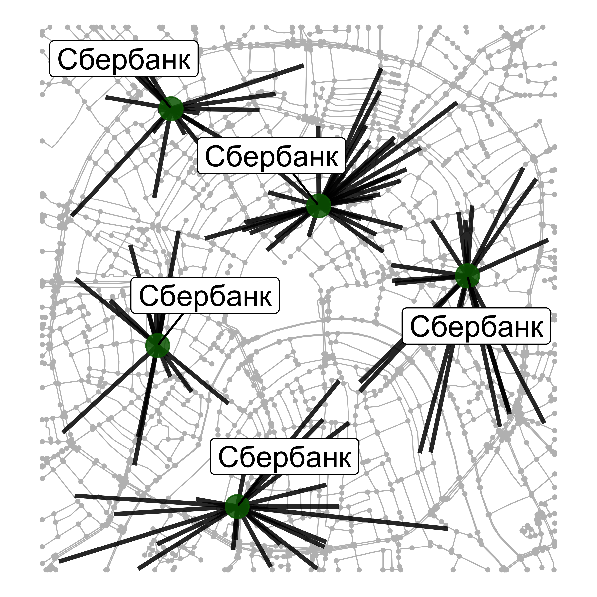
Задача данного класса позволяет находить для каждой точки клиента ближайший к ней пункт обслуживания
Пример
Для каждого заведения общепита найти ближайшее по времени отделение Сбербанка для автомобилиста
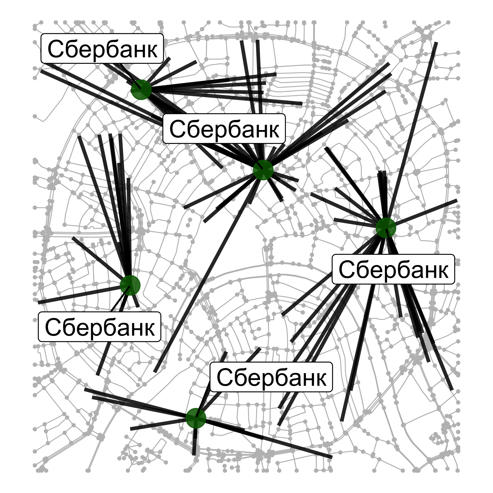
Изохрона — это линия постоянного времени движения от или до заданной точки.
Алгоритм построения
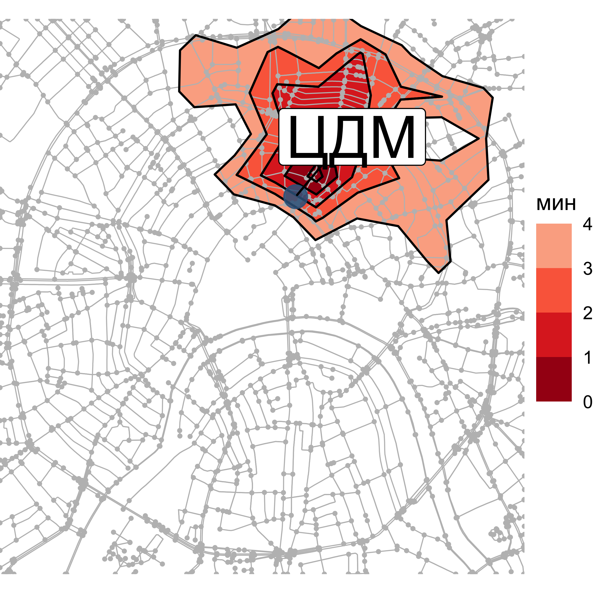
Анализ структуры географической сети охарактеризовать ее устройство в виде формальных показателей, определить топологические отношения и центральность отдельных элементов.
Центральность
Центральность — это важность элемента сети. Существует множество показателей центральности
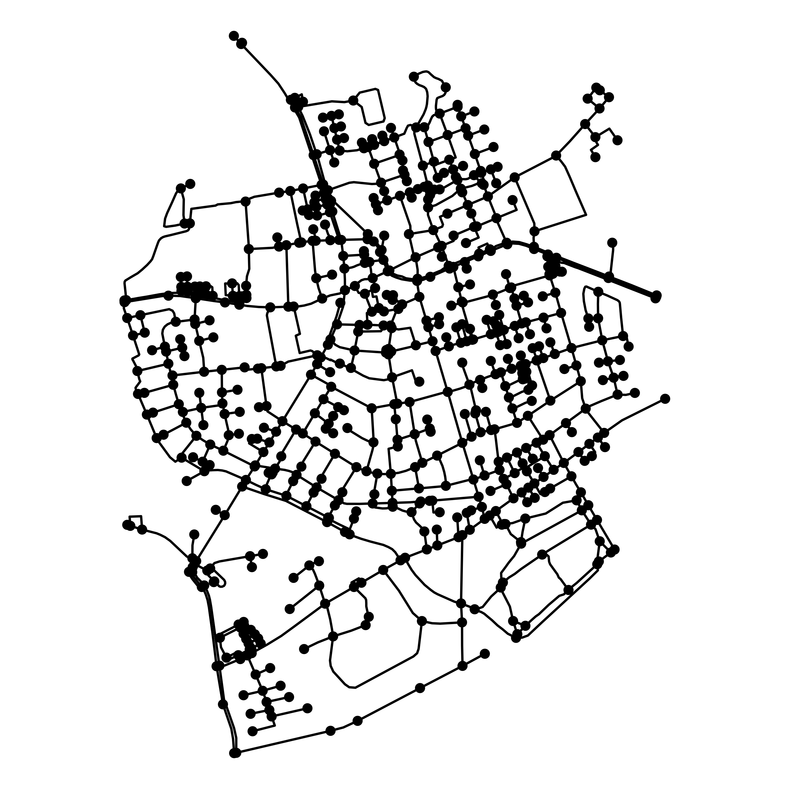
Центральность по промежуточности показывает количество маршрутов, проходящих через узел/ребро.
Расчет и интерпретация
Результат показывает основные магистрали в сети.
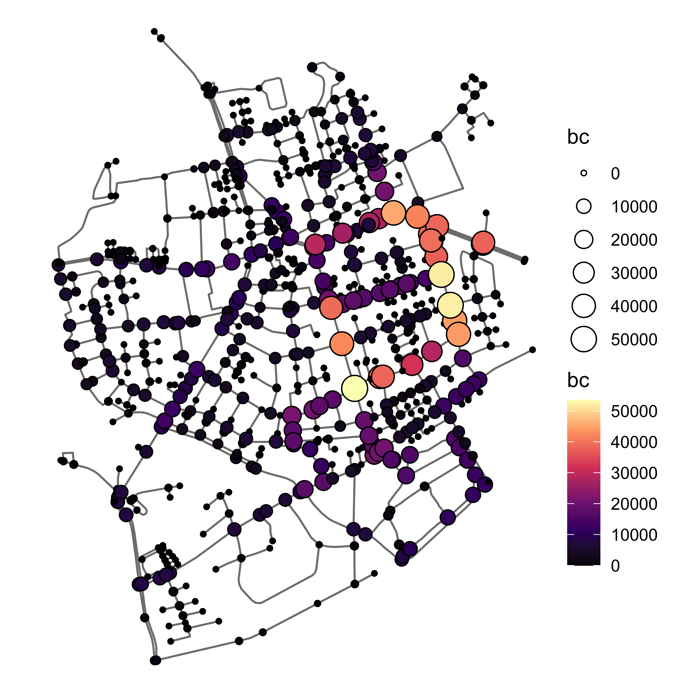
Центральность по близости обратно пропорциональна сумме расстояний от вершины до остальных вершин.
Интерпретация
Центральность по близости позволяет выделить условный “центр” сети — множество вершин, равноудаленных от всех остальных
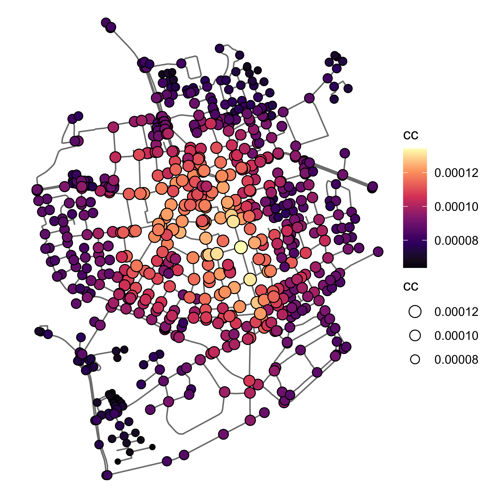
Центральность по степени показывает количество ребер, с которыми связана вершина.
Интерпретация
Центральность по степени является локальной характеристикой, она показывается важность вершины в ее собственной окрестности
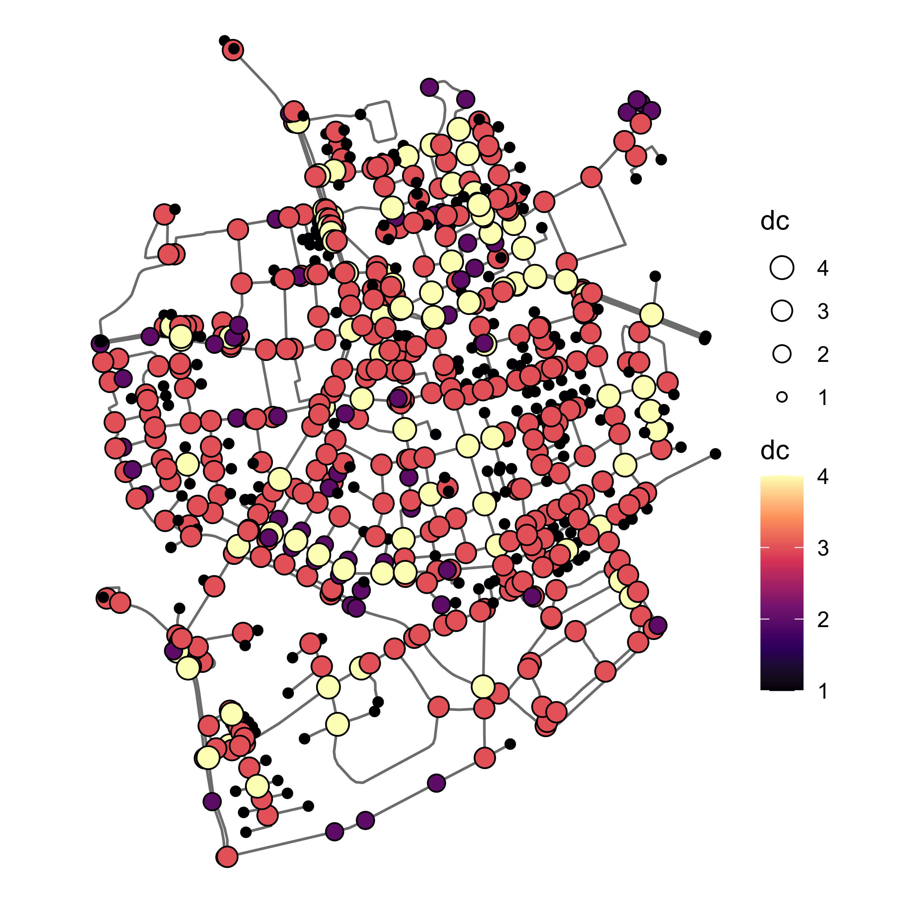
Центральность по влиятельности показывает сумму степеней вершин, с которыми связана текущая вершина.
Интерпретация
Центральность по влиятельности позволяет выделить области графа, в которых наблюдается сложная топология сети
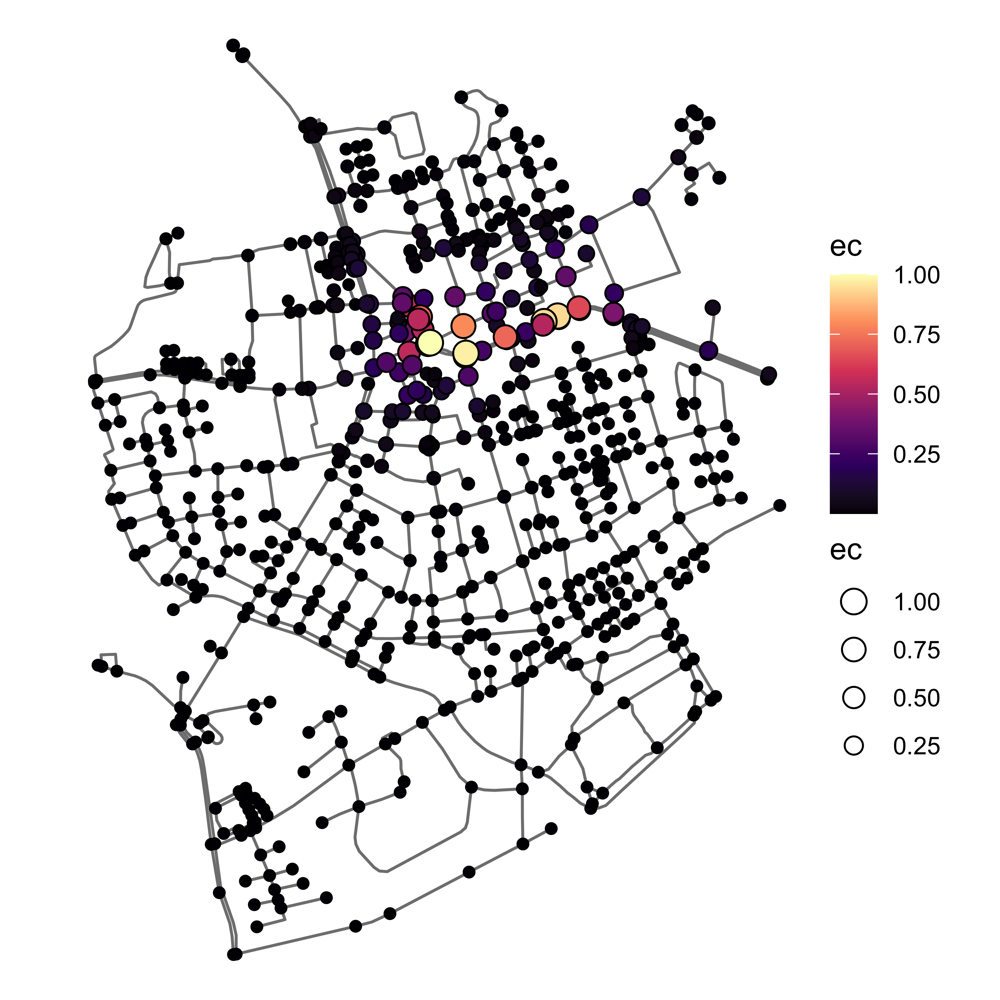
Сеть
Граф
Матрица смежности
Маршрут
Задача коммивояжёра
Ближайший пункт обслуживания
Изохрона
Центральность
Прмежуточность
Близость
Степень
Network
Graph
Adjacency matrix
Route
Traveling salesman problem
Closest facility
Isochrone
Centrality
Betweenness
Closeness
Degree
Самсонов Т. Е. Основы геоинформатики: курс лекций